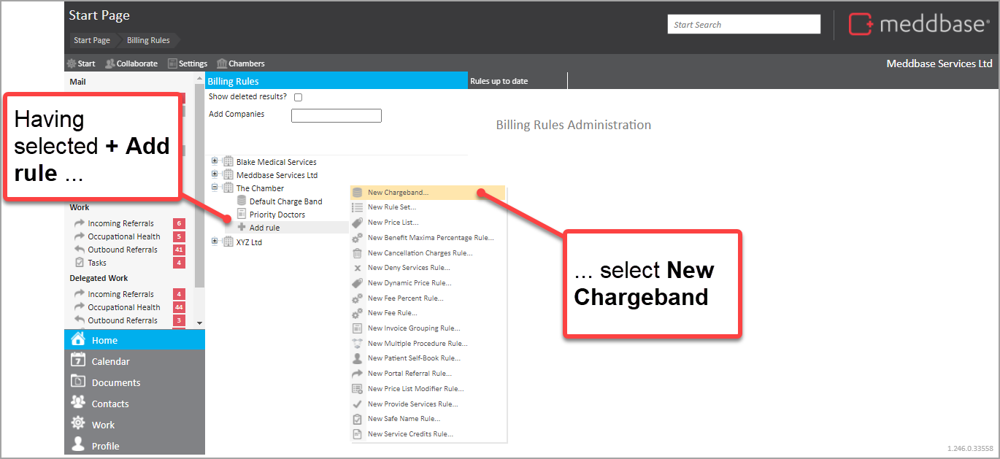
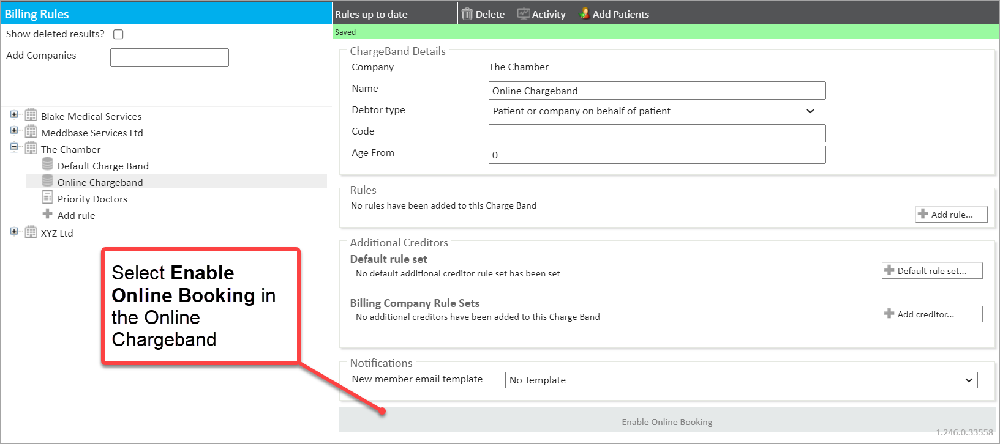
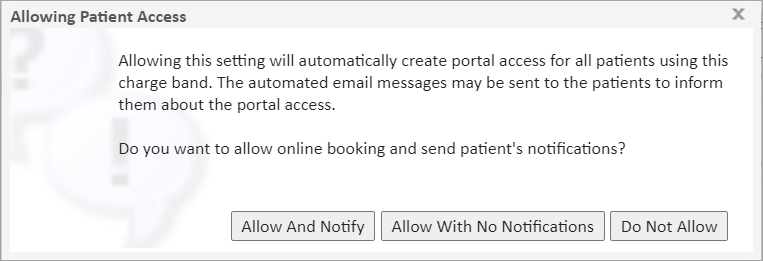
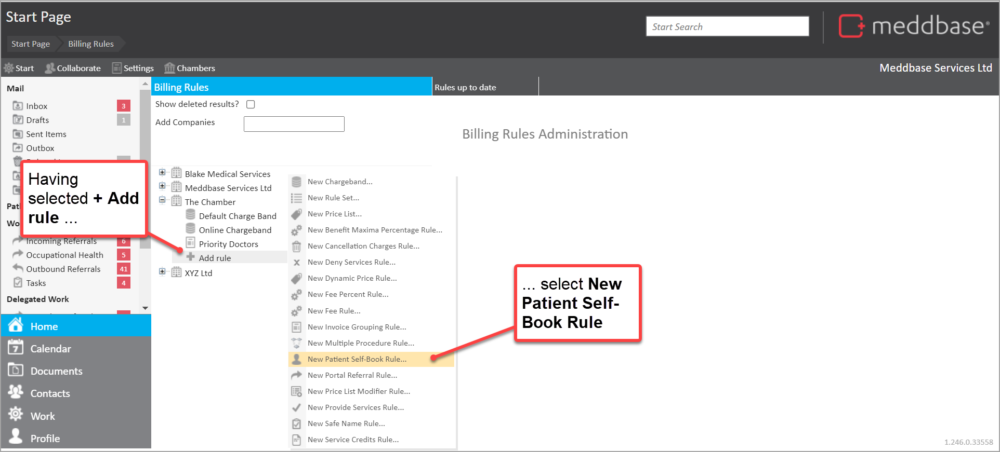
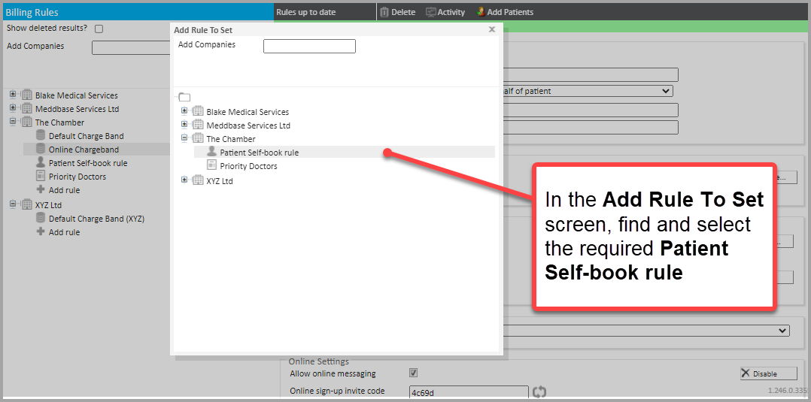
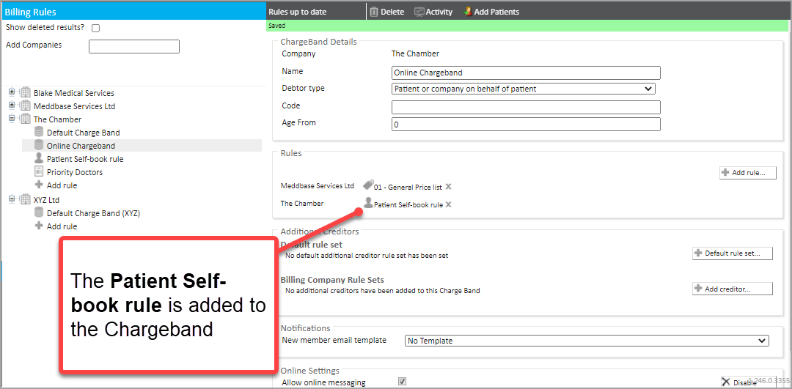
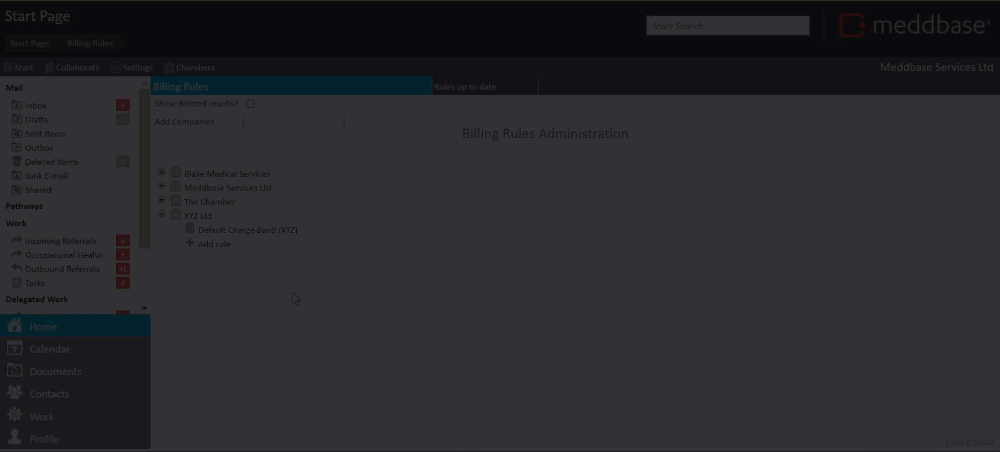

A Charge Band is a container for sets of rules that define the pricing and eligibility for services for a patient. There are some Charge Band characteristics that are set separately from the Rules. These include:
For more information about chargebands and billing rules, please see What Billing Rules are and how to use them.
An online Charge Band is required to allow patients to book appointments online. This Charge Band will reflect what appointments/services can be booked by patients via the online portal. This can be a newly created Charge Band or changes made to an existing one.
This article set out the steps in this process as summarised below:

You can amend an existing Charge Band rather than create a completely new one
Within the Charge Band, click Enable Online Booking at the bottom of the Charge Band Details screen

After enabling online booking, you will be presented with the Allowing Patient Access notification dialogue.

These options are explained in the table below.
| Option | What it does |
| Allow And Notify | By selecting this option you allow online booking and the system will notify all your patients who are currently on this Charge Band. Any new patients that get added to this Charge Band in the future will also receive the notification and access to the portal. |
| Allow With No Notifications | By selecting this option you are just looking to give access to patients that are currently on this Charge Band without sending them a notification. You should use this option if you just want to let certain patients know about their access to the portal. Future patients will have access, but they would not get notified until you manually notify them. |
| Do Not Allow | By selecting this option, you are not enabling online booking |
When you enable the online functionality the automated 'Validate Address' email will be sent to all patients on the Charge Band. You can configure this under Configuration > Online Portal > Registration Email.
If you want the patient to receive the 'New member template' additionally, you must configure the template and then add your patient to the charge band. If the patient already exists on the Charge Band they will NOT receive the 'New member template'.
The optional fields and features of the Online Settings panel now presented are explained in the table below.
| Field / feature | What it does |
| Allow online messaging | Where this option is ticked, patients can send and respond to messages with clinicians via the Patient Portal. This is explained in more detail in the Online Messaging article. |
| On-line sign-up invite code | An invite code is required if you would like new patients to register themselves within your chamber as new patients by using the "Sign Up" option from the Patient Portal home page. In this context, a 'new patient' is one that does not already exist in your Meddbase chamber. |
| Disable (button) | Using this option will remove portal access for all patients using this Charge Band. Affected patients will be forced to re-validate their account details the next time they are given access. |
1. From the Billing Rules page
2. Click + Add Rule from under the company
3. From the menu that appears, select New Patient Self-Book Rule...

A new Self-book rule appears on the right-hand side.
| Field / feature | What it does |
| Name | Set the name of the rule. |
| Allow Patient Self-Book | When ticked this will allow patients to book themselves into the specified services. |
| Provide Services When... | Primary Doctor is - Rule applies if a specific doctor is attending Site is - Rule applies if the appointment is at a specific site Location is - Rule only applies if the appointment is in a specific location Tag is - Rule applies if the 'Billing Tag' for a session is equal to the text field |
| Services Affected | Select which services patients will be able to choose from for self-booking |
4. In the Patient Self-Book Rule Details panel add a Name for the rule
5. In the Patient Self-Book Rule Details panel tick the box Allow Patient to Self-Book
6. In the Services Affected panel click on the +Show All button
7. Then click on +Add in Services Affected panel and tick the Appointment types you wish to allow the patient to book via the Portal.
Only these selected appointments will then be available to these patients for booking on the Patient Portal.
1. From the Billing Rules page, select the Online Charge Band
2. In the Rules panel, select the + Add Rule button
3. In the Add Rule to Set dialogue that appears, find the previously created Patient Self-book rule and select it

4. Close the Add Rule to Set Dialogue box.
You will now be able to see the Patient Self-book rule added to the Charge Band.

A Patient Self-Book rule needs to be added to any charge band where you would like patients to be able to book appointments online via the portal.
Add other Billing Rules that apply to this Charge Band. This may include price lists, provide service rules, and others.
Appointments that you wish to be available for booking by the patient on the Patient Portal need to be 'approved' for online booking. This can be done in Appointment Admin: Start Page > Admin > Appointment Admin > [Select Appointment] Edit > Can Book Services on Portal (Tick)
The short video below summarises actions for:
